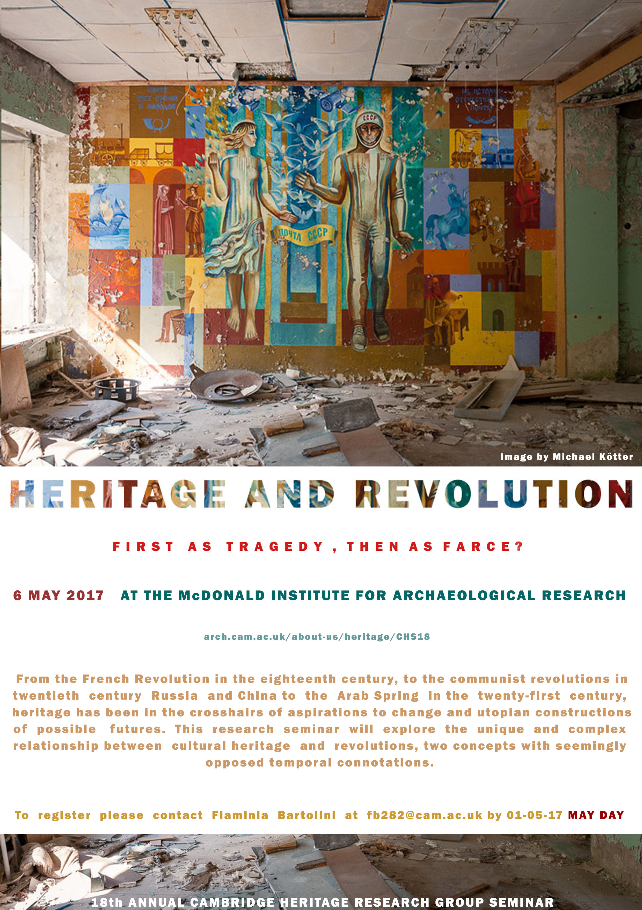

Annual Cambridge Heritage Research Conference
The Cambridge Heritage Research Group has hosted the annual Cambridge Heritage Seminar (CHS) for ten years. The CHS series have brought together researchers, policymakers and practitioners to explore the most pressing issues in heritage studies today.
2017: Heritage and Revolution: First as Tragedy, Then as Farce?
2017’s Cambridge Heritage Seminar will be held on Saturday, 6 May 2017

Venue: McDonald Institute for Archaeological Research
Downing Street Cambridge CB2 3ER
Past conferences


CHS17 (2016) - Heritage of Displacement
CHS16 (2015) – African Heritage Challenges | proceedings
CHS15 (2014) – 1914 Inherited
CHS14 (2013) – Heritagescapes
CHS13 (2012) – Heritage Studies: Stories in the Making
CHS12 (2011) – The Heritage of Memorials and Commemorations | report
CHS11 (2010) – Heritage and the Olympics
CHS10 (2009) – The Future of Historic Cities | proceedings | report
CHS 9 (2008) – Packaging the Past | report
CHS 8 (2007) – Revisioning the Nation
CHS 7 (2006) – Intangible-Tangible Cultural Heritage| report
2014 Mediterranean Symposium | Images